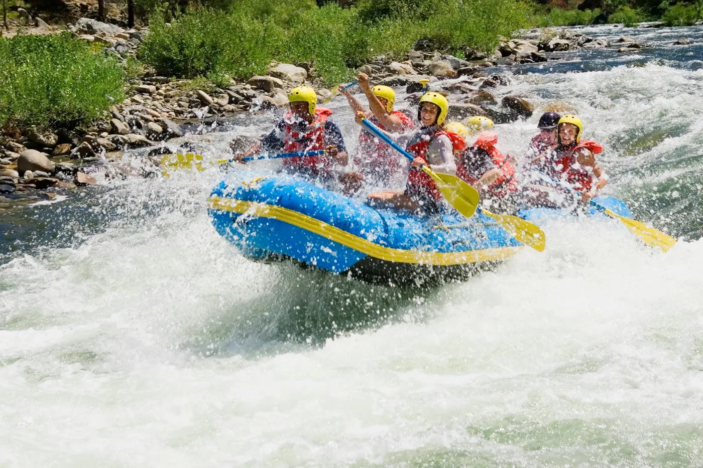
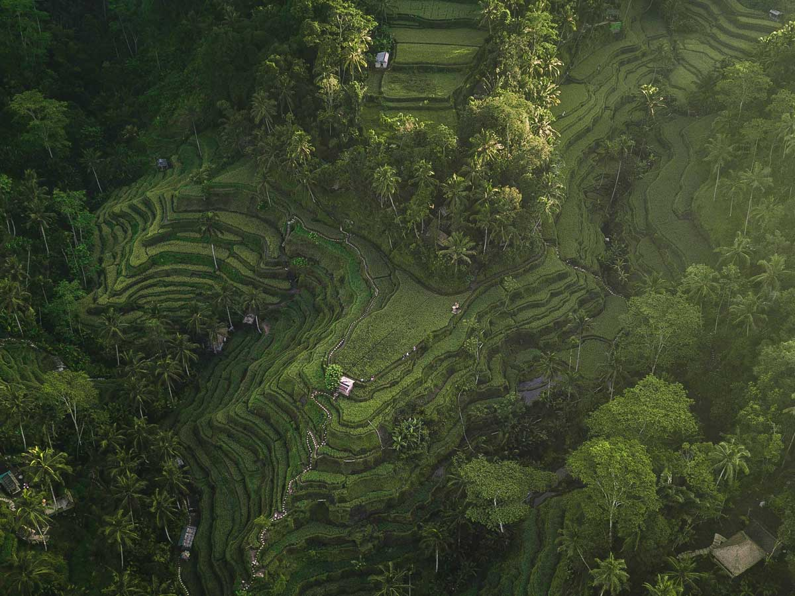
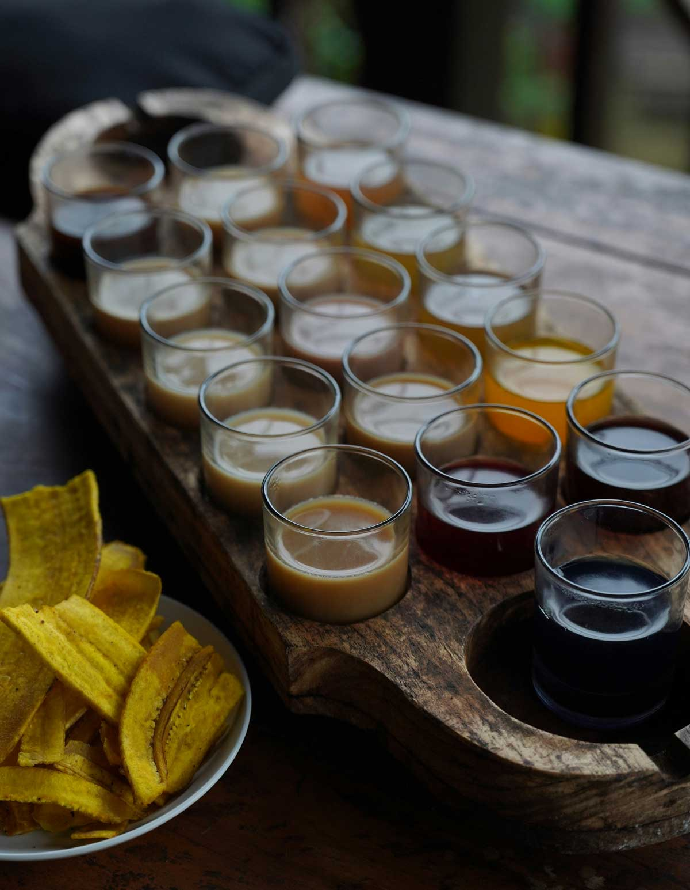
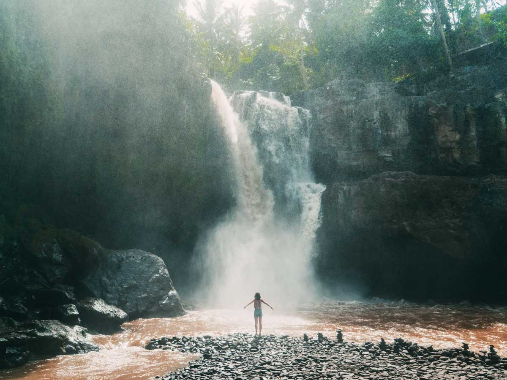

Paddle the Ayung River through jungle gorges and hidden waterfalls, then dry off among the Tegalalang rice terraces, Luwak coffee, and the Tegenungan waterfall. A private car, a local driver, your pace.

We start with the highlight - a 2-hour white-water descent of the Ayung River, Ubud's most famous rafting run. Grade II-III rapids weave past jungle walls, carved stone reliefs, and cascading waterfalls, with a trained guide in every boat. Beginners and families welcome; all safety gear provided.

Bali's most iconic stepped rice fields north of Ubud, hand-carved over generations and still fed by the thousand year old subak irrigation system. Wander the paths, catch the swings and photo spots, and take in one of the island's signature views.

Walk through a working plantation to see how coffee, cacao, and spices grow, then taste your way through a tray of Balinese coffees and teas - including the famous kopi luwak straight from the source. Tastings are complimentary.

A wide, powerful waterfall tucked into the jungle just outside Ubud, with a natural pool at its base you can swim in when the water is calm. A short walk down, and a genuinely refreshing reward to end the day.